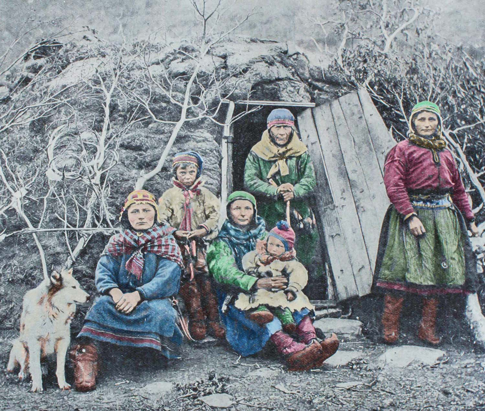

L'Histoire Sami
Les premiers habitants du Sápmi (le territoire des samis) ont avancé vers le nord à mesure que les glaciers de la dernière période glaciaire reculaient. Leur culture a probablement émergé d’un mélange de plusieurs groupes partageant des modes de vie similaires. Le paysage enneigé du sapmi rendait l'invasion difficile, ils avaient donc rarement besoin de se battre ou de s'organiser politiquement. Ils ont acquis une réputation parmi les premiers écrivains en tant que sorciers insaisissables, patinant sur la neige sur des skis en bois.À la fin du Moyen ge cependant, leurs voisins du sud ont commencé à regarder vers le nord. Les anciennes voies de migration des rennes amenaient désormais les Samis à travers de multiples frontières, attirant des impôts de tous côtés. Pour remédier à ce problème, certains des samis ont apprivoisé leurs rennes, remodelant les schémas migratoires et réduisant leurs pâturages. D'autres se sont installés dans des communautés côtières où ils ont gagné leur vie en tant que commerçants, agriculteurs et pêcheurs. Beaucoup plus vivaient dans les forêts comme trappeurs et éleveurs limités de rennes.
Malgré la colonisation et la christianisation forcée (que les Samis côtiers ont été les premiers à subir en raison de leurs contacts plus étroits avec les colons européens), le peuple sami est le dernier peuple indigène d'Europe. En effet les samis sont un peuple de laponie dont les origines remontent à plus de 4000 ans. Ce peuple des grands froids est souvent nommé “lapon”, mais il préfère la dénomination “sami” qui vient du terme “same” de la tradition finno-ougriste française(composé de neuf dialectes). De plus, la racine “lapp” signifiant “porteur de haillons” en suéduois,vexplique que ce surnom déplaise à ce peuple.
Les samis sont des nomades qui vivent de l'élevage de renne. Le renne est au cœur de la culture sami que ce soit au niveau de leur saison ou encore leur vie qui suit le gré des aurores boréales et le cycle de vie des rennes. Leur mode de vie a un lien très fort avec la nature. Pour se nourrir les samis ont recours à la chasse, la pêche ou encore la cueillette. Malgré les années, le peuple sami est toujours bien ancré dans ses terres et la population sami est d’environ 80 à 100 000 personnes.Les Sami ont continué leur mode de vie traditionnel jusqu’au années 1500. La christianisation forcée des samis a conduit à une répression religieuse dans de nombreux domaines. Les communautés sâmes ont vu leurs tambours de chaman brûlé et leurs enfants retirés pour être scolarisés dans des écoles publiques. La perte des terres, l'extraction de l'argent, la surpêche et la construction de barrages ont menacé le mode de vie sami tout au long du 20e siècle. Les samis étaient traités comme une curiosité par les scientifiques et les touristes.
Cela a commencé à changer dans les années 1970, lorsque des militants Samis se sont manifestés. Leurs efforts ont alimenté un renouveau culturel plus large, aboutissant à des parlements Samis en Norvège, en Suède et en Finlande. Aujourd'hui, environ 10 000 Samis continuent de pratiquer l'élevage de rennes. Ils font partie d'une population plus large d'environ 70 000 personnes qui s'identifient comme sami. La majorité, cependant, mènent des modes de vie modernes en tant que membres de leurs nations.